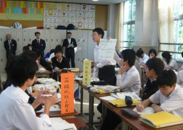
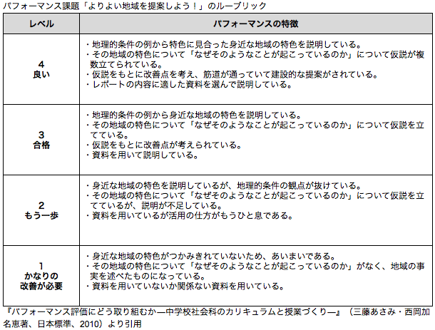
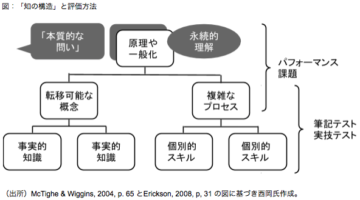

アクティブ・ラーニングをどう評価すべきか〜西岡加名恵氏に聞く
学習意欲の向上につながる「本質的な問い」
——パフォーマンス評価の目的と内容について、具体的に教えてください。
「パフォーマンス評価は、先ほどお話しした『思考力・判断力・表現力』が身についているかを評価する方法として注目されています。評価の方法には、観察や対話による評価や実技テスト、自由記述問題による筆記テストなどさまざまなものがありますが、私が主に研究してきたのは、レポートやプレゼンテーションなどの『パフォーマンス課題』と、『ルーブリック』と呼ばれる評価基準表を用いた評価方法です」

パフォーマンス課題に関する話し合いの様子
提供：三藤あさみ先生（横浜市）
「2004年度からの5年間、横浜の中学校の先生と共同で社会科におけるパフォーマンス課題とルーブリックの開発に取り組みました。例えば、現在の学習指導要領で中学2年生の単元とされている『身近な地域の調査』では、生徒たちに『よりよい地域を提案しよう！』というパフォーマンス課題を与えました。これは、生徒一人ひとりが都市計画の研究者であり、神奈川県庁からよりよい地域を作るためのアドバイスを求められたという設定のもとで、住んでいる町の特色をとらえて説明し、提言レポートをまとめて会議で報告するというものです」
——生徒たちが作成したレポートの内容を、ルーブリックによって評価するわけですね。
「そうです。この場合は評価のレベルを4段階に分けました。例えば資料の扱いについて言えば、最高評価の4では『レポートの内容に適した資料を選んで説明している』、次点の3では『資料を用いて説明している』といった書き方をしています。地理的条件、地域の特色についての仮説、仮説をもとにした改善点、といった観点でも同様に、パフォーマンス（生徒の振る舞い）の特徴と評価が明記されています。こうしたルーブリックをあらかじめ示しておくことで、教師が学習活動を通して何を期待しているかが生徒にも理解できるようになります」

——パフォーマンス課題はどのようにして作るのでしょうか。
「パフォーマンス課題を作る上で重要なのが米国発の『逆向き設計（backward design）』（*6）という考え方です。逆向きという言葉には、一般には指導をした後に考えられがちな評価の方法を最初に考えるという意味と、生徒たちの卒業時など最終的な結果から遡って教育を設計するという意味の両方が含まれています。『真正の評価』という概念を提唱したG.ウィギンズは、知の構造を『事実的知識や個別的スキル』『転移可能な概念や複雑なプロセス』『原理や一般化に関しての永続的理解』の3つに分けていますが、パフォーマンス課題の目的となるのは後ろの2つです。特に永続的理解が身に付いているかを見極めるために有効なのが、教科の本質を見極めさせるような『本質的な問い』です。本質的な問いは通常、一問一答では答えられないので、じっくりと考えることを促します」

——「本質的な問い」というのは、具体的にはどういった問いですか。
「例えば社会科の歴史であれば、『時代によって社会はどのように変化してきたのか』『社会を変化させる要因は何で、どうすればより良い社会を実現できるのか』といったことが、教科全体を貫く本質的な問いと言えるでしょう。理科であれば『どのように実験すればよいのか』『エネルギーとは何か』といった問いが挙げられます。これらはある学年だけで学習するのではなく、学年が上がる中で繰り返し問われるテーマです。パフォーマンス課題の開発にあたっては、こういった教科全体を貫く本質的な問いを、単元ごとの教材に即して具体化します。例えば第一次世界大戦前後から第二次世界大戦の終結までを1つの単元として捉えるなら、『なぜ戦争が起こるのか』といったことを本質的な問いとして提示し、生徒たちにじっくり考えさせるのも良いでしょう」
——パフォーマンス課題を導入した学校での生徒の反応はどうですか。
「横浜の中学校で3年生全員にアンケートをとったところ、8割の生徒がパフォーマンス課題に取り組むと力がつくと回答してくれました。具体的には『多角的に考える力』『関連づける力』『自分の考えを伝える力』などが挙げられていました。一方で、パフォーマンス課題が好きだと答えたのは4割弱、嫌いだと答えたのは全体の4分の1で、やはり取り組むのがしんどいという子も少なくありません。課題のシナリオや状況設定を生徒たちにとって共感しやすいものにすることで、これらはある程度改善できると考えています。岐阜の工業高校でパフォーマンス課題を取り入れた際にも、生徒たちからは『楽しくできるし（授業内容を）覚えやすい』『やる気がでる』といった声が寄せられました（*7）」
「ある公立小学校では、『鎌倉幕府の成立に最も貢献したのは誰か』というテーマでパフォーマンス課題を作りました。頼朝派と義経派に分かれ、優等生風の子もやんちゃそうな子も一緒になって議論を盛り上げていたのが印象的でした。本質的な問いには知識の量が少なくてもある程度答えることができますし、こうした問いに興味を持つ子は多いということを私たちも再認識しています。経験知や生活知を使って考えることで、学習の内容が自分たちの生活とつながっていることを理解し、学習意欲が高まる効果も期待できます」
（次のページは 評価という言葉のネガティブなイメージを変えたい）
*6 「逆向き設計」の考え方については、G. ウィギンズ／J. マクタイ（西岡加名恵訳）『理解をもたらすカリキュラム設計――「逆向き設計」の理論と方法』（日本標準、2012年）を参照
*7 岐阜県立可児工業高校の「電力技術」に関するパフォーマンス課題の単元計画書と生徒による感想


{kind=link}